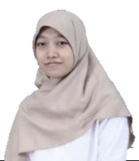

Wardatul Amalia Safitri

Tempat Lahir : Gresik
Domisili : Surabaya
Alamat Domisili : Jl. Kalikepiting Jaya IV No. 59 Pacar Kembang, Tambaksari, Suarabaya
Asal Institusi : Institut Teknologi Sepuluh Nopember (ITS)
Kontak : +628979610029
Email : wardamalias@gmail.com
Deskripsi Diri
Saya adalah mahasiswa Program Sarjana (S1) Departemen Teknik Informatika Institut Teknologi Sepuluh Nopember (ITS) Surabaya.
Di bidang informatika, saya cenderung tertarik untuk memahami pemanfaatan jaringan komputer untuk kebutuhan komputasi, seperti cloud computing, pembuatan IoT, pengembangan cyber security, dan lain-lain.
Saya adalah pribadi yang selalu berusaha bertanggung jawab atas semua hal yang saya kerjakan.
Saya memiliki cita-cita menjadi seorang yang bermanfaat di manapun saya berada.
Pengalaman Organisasi dan Kepanitiaan
- UKAFO Exhibition 2023
- - Staff Divisi Dana dan Sponsor (2022)
- - Ketua pelaksana (2023)
- Schematics 2023
- - Staff Biro Sponsorship (2022)
- - Expert Staff Biro Finance (2023)
Pengalaman Kerja
- Zenius Education
- Posisi : Freelancer Doubt Solver ZenBot Fisika
- Rentang waktu : November 2021 - Februari 2022
- Menjawab pertanyaan dari user zenius di bidang fisika yang dikirimkan melalui fitur ZenBot
- Private Tutor
- Rentang waktu : Agustus 2023 - saat ini (masih berlangsung)
- Menjadi guru les fisika untuk siswa SMA
Skillset
- Membuat sebuah proyek dengan menggunakan pemrograman berorientasi objek
- Membuat sebuah basis data (database)
- Membuat sebuah website sederhana mengguanakan HTML, CSS, dan Javascript
- Membuat website realtime chat sederhana
- Melakukan public speaking untuk materi yang telah disiapkan sebelumnya
- Merencanakan sebuah acara atau proyek dengan baik
- Menguasai bidang akademis, khususnya sains
Toolset
- Microsoft Office
- Visual Studio Code
- Canva
- Figma
- Zoom
- PostgreSQL